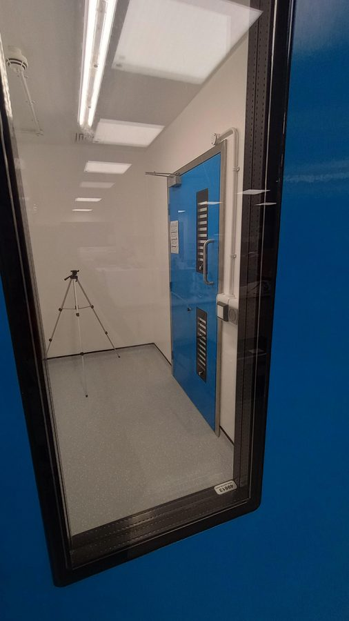

Our Laboratories & Testing Suites
The WPE group houses specialist laboratories in the School of Civil Engineering equipped for experimental research across our four core themes (Indoor Air Quality & Airborne Infection, Water Supply & Treatment, Sanitation, Wastewater & Faecal Sludge Management, and BioResources & the Circular Economy), underpinned by our cross-cutting theme in Data-Driven & Computational Methods.
Anchored by CECAM (our EPSRC-funded walk-in Class II aerobiology chamber) and our Public Health and Environmental Engineering Laboratories, our facilities are available to University of Leeds researchers, academic collaborators, and external partners from industry, healthcare, and utilities through collaborative research, contract testing, Knowledge Transfer Partnerships (KTPs), and CASE studentships.
CECAM Chamber
Microbiology & Water Lab
BioResources & Bioprocess Lab
Geotechnics, Materials & Soil
Fluids, Microplastics & HPC
CECAM: Chamber for Environmental Control of Airborne Microorganisms




Overview
Funded by EPSRC Strategic Equipment Grant EP/W006375/1 and led by Prof. Cath Noakes OBE (with Co-Investigators Dr Louise Fletcher, Dr Marco-Felipe King, Dr Amirul Khan, and Prof. Andy Sleigh), CECAM is a purpose-built 5 × 3.2 × 2.5 m Class II microbiological containment chamber (Room B.02) for room-scale bioaerosol experiments. Equipped with two heated thermal manikins (DINbots, which reproduce the buoyant thermal plume of a human body), programmable mechanical ventilation, HEPA filtration, humidity control, and distributed airspeed, temperature, humidity, CO₂, and particle sensing, CECAM enables repeatable studies of how ACDP Category 2 microorganisms are aerosolised, transported, deposited onto surfaces, and inactivated by ventilation, portable air cleaners, and germicidal UV-C (254 nm and 222 nm far-UVC).
Verified Equipment
- CECAM Class II Walk-In Chamber (5 × 3.2 × 2.5 m) Programmable HVAC, HEPA filtration, two heated thermal manikins (DINbots), Von Haus humidifier, RA-103 remote switching & Prodigit 2000MU power loggers
- Andersen 6-Stage Viable Cascade Impactor Size-resolved airborne sampling of ACDP Category 2 microorganisms (0.65–6 µm)
- Automated Moving Platform Aerosol Sampler (AMPAS) Time-resolved surface deposition and fomite transfer sampling inside the chamber
- Plair Rapid-E+ Real-Time Bioaerosol Monitor Multi-wavelength fluorescence & light-scattering detection of bacteria, fungal spores, pollen, viral aerosols & microplastics (0.3–100 µm)
- Active Bioaerosol & Laser Particle Counters Burkard C90M cyclone, Cantium MicroBio M02 & SKC samplers; Kanomax 3889 & Geo-alpha particle counters
- UV-C, Far-UVC & Portable Air-Cleaning Test Suite Ushio Care222 (222 nm far-UVC) fixtures, Lumalier E77302 UV-C units, Air Sentry HEPA cleaners, MD2 diffuser & UV-C radiometer
- Distributed Microclimate, IAQ & Microfluidic Suite BSRIA microclimate system, IQAir Visual Pro, Aeroqual S500, 3D airspeed/CO₂ lattice & lab-on-a-chip droplet-freezing cold stage
Technical Capabilities
Primary CECAM Contact

Prof. Cath Noakes OBE
Principal Investigator, CECAM (EPSRC EP/W006375/1); Professor of Environmental Engineering for Buildings (with Co-Is Dr Louise Fletcher, Dr Marco-Felipe King, Dr Amirul Khan & Prof. Andy Sleigh)
C.J.Noakes@leeds.ac.uk


Access & Policies
Internal Researchers
WPE staff, doctoral researchers, and project students have access to laboratory facilities following School of Civil Engineering safety inductions and COSHH/biological risk assessments.
Book Lab InductionAcademic Collaborators
Researchers from partner universities and institutes can access the CECAM aerobiology chamber (EPSRC EP/W006375/1) and analytical laboratories through collaborative research agreements.
CECAM Collaboration EnquiriesIndustry & NHS Partners
Contract research, commercial equipment testing (e.g. air cleaners, far-UVC devices, biogas feedstocks, water treatment), Knowledge Transfer Partnerships (KTPs), and CASE studentships.
Industry EnquiriesSafety & Containment
Microbiological and chamber experiments operate up to ACDP Category 2 (Class II containment) under biological safety protocols overseen by our technical and academic leads.
Safety EnquiriesVerified Facilities & Instrumentation Summary
A factual reference to containment levels, verified core instrumentation, measured parameters, and primary contacts across our five research suites.
| Facility Suite | Scale & Containment | Verified Core Instrumentation | Measured Parameters & Assays | Primary Contact |
|---|---|---|---|---|
| CECAM Aerobiology Chamber (Room B.02) | 5 × 3.2 × 2.5 m walk-in Class II chamber (ACDP Cat 2; EPSRC EP/W006375/1) | Two heated thermal manikins (DINbots), Andersen 6-stage impactor, AMPAS surface sampler, Plair Rapid-E+, Burkard C90M, Cantium MicroBio M02, Kanomax 3889, Ushio Care222 far-UVC, Air Sentry HEPA, BSRIA & IQAir loggers | Room-scale bioaerosol transport & survival, 0.65–6 µm viable impaction, 0.3–100 µm real-time fluorescence sizing, fomite deposition, ventilation & UV-C/HEPA efficacy | Prof. Cath Noakes OBE |
| Public Health Microbiology & Water Lab (G.08a/b) | Class II microbiology lab (ACDP Cat 2), clean molecular lab & separate waste/water/wastewater bays | Hach AP3900 Robotic Analyser, Bio-Rad CFX Opus 96 qPCR, Labcaire SC12R Class II cabinet, Don Whitley Masterclave 09, APS One & Spiral Plater, Synbiosis Protocol 3, GC, IC, UV-Vis, Olympus BH2 microscopes | COD, phosphates, nitrogen species, pH & ions; pathogen, phage & AMR gene quantification (qPCR, 16S rRNA & metagenomic prep); automated colony enumeration | Dr David Elliott |
| BioResources & Bioprocess Laboratories | Bench-top & continuous bioreactor rigs + Solid Waste Sample Preparation Lab | BioReactor Simulator III (BRS III), Agilent 990 Micro GC (online 7-gas sampling), in-house waste respirometers, Geotech GA5000 & G200 gas analysers, PreSens Fibox 4, algal ponds, photobioreactors & joint Makerere AMPTS III | Continuous biomethane & biohydrogen yields, CH₄/CO₂/O₂/N₂O emissions, respirometric reaction rates, microalgal nutrient recovery & solid waste sub-sampling | Dr Miller Camargo-Valero |
| Geotechnics, Materials & Geochemistry Suites | Bench-top, column & UKCRIC National Centre for Infrastructure Materials suites | SEM, X-ray microscopy, NMR, Simultaneous Thermal Analysis-MS, benchtop XRF, FT-IR, Ion Chromatography, geotechnics soil rigs & carbonation/freeze-thaw/salt-spray/UV conditioning cabinets | Trace-metal speciation & soil remediation, coupled THMC soil behaviour, cementitious microstructure, polymer/elemental composition & accelerated ageing | Prof. Doug Stewart |
| Fluids, Microplastics, Building Physics & HPC | Laboratory flume, building physics suite, field sensor networks & ARC HPC/GPU clusters | Fluids flume & transient pipeline rigs, B-KER² 6-paddle jar-testing flocculator, FT-IR & Plair Rapid-E+ microplastics analysis, building physics sensors & GPU CFD / Lattice-Boltzmann / BIM suites | Open-channel & two-phase transient hydraulics, microplastics coagulation/flocculation, building thermal/IAQ performance, physics-informed ML & digital twins | Prof. Martin Tillotson |
Facilities Enquiries
For enquiries regarding CECAM chamber access, laboratory analytical services, contract testing, or academic collaborations, please contact the relevant lead below.
Prof. Cath Noakes OBE
CECAM Chamber Lead (EPSRC EP/W006375/1) & Professor of Environmental Engineering for Buildings

Dr David Elliott
Environmental Engineering Laboratory Technician
D.J.S.Elliott@leeds.ac.uk · +44 (0)113 343 9453

Dr Marco-Felipe King
Director of WPE & Lecturer in Building Engineering and Infection Transmission